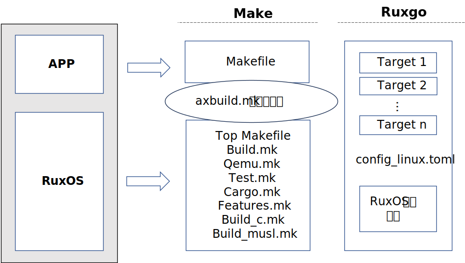
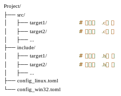

简介
Ruxgo 是一个类似于 Cargo 的构建工具, 专用于构建 C/C++ 应用程序, 它只依赖于一个 Toml 文件。
它也是 RuxOS 的一个配套命令行工具, 其目标是简化 RuxOS 及其上 C/C++ 应用程序的组装构建和管理。
Ruxgo 官网：https://github.com/syswonder/ruxgo
Rust 社区：https://crates.io/crates/ruxgo
Ruxgo 安装
要安装ruxgo可执行文件，您首先需要安装 Rust 和 Cargo。按照Rust安装页面上的说明操作。Ruxgo 目前至少需要 Rust 1.75 版本。
一旦您安装了 Rust，就可以使用以下命令来构建和安装 Ruxgo:
cargo install ruxgo
这将自动从crates.io下载并构建 Ruxgo，并将其安装到 Cargo 的全局二进制目录（默认为~/.cargo/bin/）。
发布到 crates.io 的版本将稍微落后于 GitHub 上托管的版本。如果您需要最新版本，您可以自己构建 Ruxgo 的 git 版本：
cargo install --git https://github.com/syswonder/ruxgo.git ruxgo
注意:
如果您在安装时遇到问题，可能需要安装一些构建依赖项，请参考 RuxOS 下的 README.md.
Ruxgo 指南
本节将为您提供有关如何使用 Ruxgo 开发 C/C++ 应用程序的所有信息。
为什么 Ruxgo
RuxOS 早期构建过程的局限性
在 RuxOS 的早期构建实践中，Make 构建工具通过 Makefile 来组织和管理依赖关系和构件层级，如下图所示。在构建开始时，首先需要通过环境变量指定目标架构、目标应用、日志级别以及 Features 等信息，随后通过顶级 Makefile 来启动整体构建流程。其中，build.mk 文件负责完成 OS Unikernel 镜像的构建，而具体的 RuxOS 内核构建、子构件选择、用户库构建则分别由 cargo.mk、features.mk、build_c.mk 和 build_musl.mk来完成。此外，镜像的运行和测试则通过 qemu.mk 和 test.mk 完成。

从上述 RuxOS 的构建过程可以看出，随着系统规模的增长和构件数量的增加，Makefile 的配置变得愈加复杂和庞大。每当新增或修改构件时，都可能需要对 Makefile 进行大量修改，这不仅增加了开发者的负担，也降低了项目的可维护性，同时也存在很多的局限性，具体如下：
（1）缺乏细粒度的构件关系管理：虽然 Make 可以处理基础依赖关系，但并非为解决构件化系统中常见的细粒度依赖问题而设计。在这样的系统中，构件和特性的选择可能高度动态，因此需要更灵活的依赖解决方案。
（2）缺乏对配置的有效支持：Makefile 本身并不是为处理复杂的配置关系而设计的。当 RuxOS 需要灵活的配置来选择和组合不同构件时，开发者常常不得不依靠环境变量或手动编辑 Makefile，这不仅增加了配置过程的复杂度，还产生了环境隔离问题，导致在不同开发环境下重现构建结果存在一定难度。
（3）有限的 Rust 生态系统集成：RuxOS 采用 Rust 语言开发，意味着更倾向于与 Cargo 或 Rust 的生态系统无缝集成。然而，Make 与 Cargo 的集成，如通过单独的 cargo.mk 所示，可能引入额外的复杂性，并且缺乏有效的生态系统利用。
（4）并行构建支持不足：虽然 Make 支持并行构建以加快构建速度，但在复杂的依赖结构下，其并行能力受到限制。例如，构件与构件之间不正确的依赖管理可能导致并行构建出错，从而迫使开发者牺牲构建速度以保证结果的正确性。
应用程序移植困难及构件化需求
在 RuxOS 的开发过程中，一个核心目标是实现对广泛类 Unix 应用程序的兼容，旨在通过整合类 Unix 应用生态来扩展 RuxOS 的生态系统。在项目的早期阶段，移植应用程序的一个直接方法是利用应用程序原有的构建工具，来首先生成库文件或中间对象文件，随后将这些文件与 RuxOS 静态库链接，形成最终的 Unikernel 镜像文件。然而，在实际的移植过程以及后期维护、开发过程中，都面临着多重挑战，具体如下：
（1）应用程序的构件化需求：应用程序的构建通常涵盖了众多功能模块，包括核心功能、辅助功能、测试功能以及平台特定功能等，其中许多功能并非在所有场景下都是必需的。在 RuxOS 上移植这些应用时，由于 RuxOS 可能缺少某些系统库或不支持特定的函数调用，直接移植整个应用程序可能会遇到兼容性问题。
（2）应用程序的后期维护需求：一些中等规模的软件项目，其 Makefile 也可能包含数千行代码。在将应用移植到 RuxOS 后，为适配 RuxOS 的构建需求，对原有 Makefile 的调整和修改不可避免，从而加大了应用程序后期维护工作的难度。
（3）应用程序的增量构建需求：在RuxOS上对应用程序进行二次开发或修改时，完整的构建过程可能耗费大量时间，这使得增量构建成为开发过程中的一个必要需求。
RuxOS构件化管理缺乏
原有 RuxOS 的开发和部署缺乏有效的构件化管理。例如下图所示，RuxOS 的 Modules 模块包含了主干构件和功能构件。主干构件，如 ruxruntime、ruxhal、ruxconfig 等，构成了 RuxOS 的核心，是系统运行不可或缺的部分。相比之下，功能构件如 ruxtask、ruxfs、ruxdriver 等则根据应用程序的具体需求进行选择，这些模块易于变动且高度可配置。

在应用程序构建过程中，开发者首先需要本地下载完整的 RuxOS 代码库，然后基于特定应用的需求，从 Ulib 库、Modules 模块或 Crates 模块中选择必要的构件集合，最终创建 Unikernel 镜像。这一过程在 RuxOS 项目初期或许可行，但随着项目的发展和构件数量的增加，项目的维护难度和本地存储需求也将显著提升。
Ruxgo 设计目标
Ruxgo 旨在为 RuxOS 提供一个构件化支持、高性能、用户友好且生态完善的构建系统。其开发专注于满足 RuxOS 的组装构建需求，同时也支持广泛的类 Unix 系统及 Windows 系统上基于 C/C++ 开发的应用程序。下图是改用 Ruxgo 构建应用程序的设计示意，整个构建描述只需要一个 Toml 文件：

Ruxgo 的具体设计目标包括：
（1）对 RuxOS 的构件化支持：
Ruxgo 将提供更细粒度的构件和依赖管理能力，支持复杂配置的灵活性，减少手动干预。通过自动化构建流程，Ruxgo 将能够根据应用需求自动选择和配置所需组件，从而提高构建过程的效率。
（2）对应用程序的构件化支持：
为了应对应用程序在开发和移植过程中的挑战，Ruxgo 将支持应用程序的功能分解与组装。它将允许应用程序仅包含对于在 RuxOS 上运行所必需的功能模块，同时提供必要的接口来适配和集成系统库和函数调用，确保应用程序的兼容性和性能。
（3）简洁明了的构建描述：
Ruxgo 的设计理念核心在于提升用户体验，旨在通过简洁明了的构建描述文件和易于理解的 API 接口，减少软件开发人员在构建过程中的负担，从而降低学习曲线。这样，软件开发人员能够更多地专注于源代码的编写和创新，而非耗费大量时间和精力在理解和使用构建工具上。
（4）高性能的构建:
Ruxgo 旨在最小化自身的构建系统开销，以实现快速的响应。同时采用多种优化策略，包括构件内部和构件间的并行编译和增量编译等，以实现在各种计算环境下的高效构建，特别是资源受限的设备上。
（5）有效的构件包管理:
Ruxgo 将实现 RuxOS 主干构件和功能构件的远程仓库存储，以便于按需下载和集成，而非在本地存储整个代码库。远程存储机制允许应用程序只获取所需部分，减少本地存储占用，从而加快 Unikernel 镜像的创建过程。此外，相关构件可在远程独立维护和更新，有助于提高系统整体的构建效率和灵活性。
构建描述说明
Ruxgo 选择 TOML 文件格式进行构建描述。这是一个旨在易于阅读和编写的声明性文件格式，特别适用于 RuxOS 的构建配置需求。
在具体实现方面，Ruxgo 采用 config_<platform>.toml 文件来根据不同的平台配置项目。例如，针对 Linux 平台采用 config_linux.toml 文件，针对 Windows 平台则采用 config_win32.toml 文件。下图是 Ruxgo 的源代码文件组织示意：

TOML 文件设计
Ruxgo 的 TOML 构建描述文件主要包含三个核心组件：Build 组件、Targets 组件和 OS 组件。如下图所示：

各个组件的具体功能和配置项描述如下：
Build 组件：
定义构建过程中的基本配置，如编译器的类型和应用程序可执行文件的路径。具体包含以下字段：
-
compiler: 指定使用的编译器类型。例如，对于 GCC 编译器，此字段值为 “gcc”；对于 Clang 编译器，此字段值为 “clang”。 -
app: 指定应用程序可执行文件的路径。
通过在 Build 组件中指定适当的编译器，如 GCC 或 Clang，Ruxgo 能够适配不同的开发环境和平台。同时，Build 组件还允许直接指定应用程序的可执行文件路径，以支持预编译的二进制文件的集成和部署。
Targets 组件：
定义应用程序的构建目标和相关配置。在 Targets 组件中，每个目标可以是一个库、一个可执行文件或其它类型的构建产物。一个配置文件中可以定义多个应用程序构建目标（Target），每个构建目标都包含以下字段：
-
name: 指定目标的名称。对于动态链接库（“dll”）类型的目标，命名需 “lib_” 前缀开头。 -
src: 指定目标源代码的根路径。Ruxgo将递归处理该路径下的所有源文件。 -
src_only(可选): 列举仅需构建的src中的特定源文件。 -
src_exclude(可选): 指定在构建过程中需要排除的 src 中的源文件或目录。 -
include_dir: 指定目标源代码所需的头文件路径。 -
type: 指定目标的类型，可以是 “static”、“dll”、“object” 或 “exe”，分别代表静态库、动态链接库、中间对象文件和可执行文件。在一个 TOML 文件中，只能有一个 “exe” 目标，但可以有多个其它类型的目标。 -
cflags: 指定目标中源文件的编译选项。 -
archive(可选): 如果目标类型是 “static”，可以指定一个归档工具来创建静态库，例如：“ar”。 -
linker(可选): 指定目标的链接工具。如果该值缺失，则根据compiler选项指定默认值，例如：compiler值为 “gcc”，则目标的默认链接工具为 “gcc”。需要注意的是，当在 RuxOS 上链接所有的库和目标文件时，应当使用 “rust-lld -flavor gnu” 链接工具。 -
ldflags: 指定目标中源文件的链接选项。 -
deps: 列出当前构建目标所依赖的其它目标，确保依赖关系的正确处理。
通过为每个构建目标配置源代码路径、头文件路径、编译选项、链接选项以及依赖关系等，Ruxgo 能够精确地控制它们的构建过程，并确保目标之间的依赖关系得到正确处理。
OS 组件：
OS 组件是一个可选组件，用于为应用程序提供在 RuxOS 上运行所需的配置和环境。OS 组件包含以下几个关键字段：
-
name: 指定操作系统的名称，用于区分不同的操作系统环境配置。 -
services: 列出操作系统需要提供的服务，以支持特定功能或应用需求。 -
ulib: 指定用户库，例如：“ruxlibc” 或 “ruxmusl”，以便在构建过程中链接。
Ruxgo 提供了基于 QEMU 虚拟机的 x86_64、aarch64 或 riscv64 目标平台的通用配置选项，用户可以根据需求在 [os.platform] 中进行配置，具体字段如下：
-
name: 指定操作系统在哪个平台上运行，可选项有：“x86_64-qemu-q35”、“aarch64-qemu-virt” 和 “riscv64-qemu-virt”。默认值为：“x86_64-qemu-q35”。 -
smp: 指定处理器数量。默认值为：“1”。 -
mode: 指定构建模式。默认值为：“release”。 -
log: 指定日志级别，可选项有：“trace”、“debug”、“info”、“warn“和“error”。默认值为：“warn”。 -
v: 指定 verbose 级别，可选项有：“”、“1”、“2”。默认值为：“”。
对于这些依赖于 QEMU 虚拟机的目标平台，可以在 [os.platform.qemu] 中进一步定义 QEMU 的运行时选项。Ruxgo 提供了一些通用的配置字段，具体如下：：
-
blk: 指定是否启用 virtio-blk 存储设备。默认值为：“n”。 -
net: 指定是否启用 virtio-net 网络设备。默认值为：“n”。 -
graphic: 指定是否启用 virtio-gpu 显示设备和图形输出。默认值为：“n”。 -
debug: 指定是否启用 gdb 服务，启用后将监听本地 1234 端口。默认值为：“n”。 -
disk_img: 指定虚拟磁盘镜像的路径。默认值为：“./disk_img”。 -
v9p: 指定是否启用 virtio-9p 设备。默认值为：“n”。 -
v9p_path: 指定 virtio-9p 后端的主机路径。默认值为：“./”。 -
qemu_log: 指定是否启用 qemu 日志。默认值为：“n”。 -
net_dump: 指定是否启用网络包转储。默认值为：“n”。 -
net_dev: 指定 qemu 网络设备的后端类型，可选项有：“user“或“tap”。默认值为：“user”。 -
ip: 指定虚拟网络设备的 IPv4 地址。默认值为：“10.0.2.15”。 -
gw: 指定虚拟网络设备的网关。默认值为：“10.0.2.2”。 -
args: 指定命令行参数，以逗号分隔。它用于传递特定的变量，如 argc、argv。默认值为：“”。 -
envs: 指定环境变量，键值对之间用逗号分隔。默认值为：“”。
TOML 文件示例
Ruxgo 有如下三种适用场景:
-
在本地构建自我开发的应用程序；
-
在 RuxOS 上开发或移植应用程序；
-
在 RuxOS 上直接运行应用程序可执行文件。
下面将以 sqlite3 为例，分别给出这三种情况下对应的 TOML 文件示例：
（1）在本地主机（linux平台）构建 Sqlite3:
[build]
compiler = "gcc"
[[targets]]
name = "libsqlite3"
src = "./sqlite-amalgamation-3410100"
src_exclude = ["shell.c"]
include_dir = "./sqlite-amalgamation-3410100"
type = "static"
cflags = "-w -DSQLITE_THREADSAFE=0 -DSQLITE_OMIT_FLOATING_POINT -DSQLITE_OMIT_LOAD_EXTENSION"
archive = "ar"
ldflags = "rcs"
[[targets]]
name = "local_sqlite3"
src = "./"
src_only = ["main.c"]
include_dir = "./"
type = "exe"
cflags = "-w -g"
ldflags = ""
deps = ["libsqlite3"]
（2）在 RuxOS 上构建 Sqlite3:
[build]
compiler = "gcc"
[os]
name = "ruxos"
services = ["fp_simd","alloc","paging","fs","blkfs"]
ulib = "ruxlibc"
[os.platform]
name = "x86_64-qemu-q35"
smp = "2"
mode = "release"
log = "error"
[os.platform.qemu]
blk = "y"
graphic = "n"
[[targets]]
name = "libsqlite3"
src = "./sqlite-amalgamation-3410100"
src_exclude = ["shell.c"]
include_dir = "./sqlite-amalgamation-3410100"
type = "static"
cflags = "-w -DSQLITE_THREADSAFE=0 -DSQLITE_OMIT_FLOATING_POINT -DSQLITE_OMIT_LOAD_EXTENSION"
archive = "ar"
ldflags = "rcs"
[[targets]]
name = "ruxos_sqlite3"
src = "./"
src_only = ["main.c"]
include_dir = "./"
type = "exe"
cflags = "-w -g"
linker = "rust-lld -flavor gnu"
ldflags = ""
deps = ["libsqlite3"]
（3）在 RuxOS 上运行 Sqlite3 可执行文件:
[build]
compiler = "gcc"
app = "your_app_path" # 在这里指定可执行文件路径
[os]
name = "ruxos"
services = ["fp_simd","alloc","paging","fs","blkfs"]
ulib = "ruxlibc"
[os.platform]
name = "x86_64-qemu-q35"
smp = "2"
mode = "release"
log = "error"
[os.platform.qemu]
blk = "y"
graphic = "n"
args = "" # 在这里指定应用程序所需参数
构建一个项目
可以使用 Ruxgo 快速开始一个项目。首先，确保您的系统上已安装 ruxgo。如果尚未安装，请参考 Ruxgo 安装 。
之后使用如下命令初始化一个 C 项目：
ruxgo init my_project --c
初始化完成后，切换到 my_project 目录，使用 ruxgo 构建并运行：
ruxgo -b
ruxgo -r
如果您想在 RuxOS 上运行，将 my_project 下的config_<platform>.toml文件修改为如下:
[build]
compiler = "gcc"
[os]
name = "ruxos"
services = []
ulib = "ruxlibc"
[os.platform]
name = "x86_64-qemu-q35"
mode = "release"
log = "info"
[os.platform.qemu]
graphic = "n"
[[targets]]
name = "main"
src = "./src/"
include_dir = "./src/include/"
type = "exe"
cflags = "-g -Wall -Wextra"
linker = "rust-lld -flavor gnu"
ldflags = ""
deps = []
之后将 my_project 复制到 ruxos/apps/c 目录下，切换到 my_project 目录，使用 ruxgo 构建并运行：
ruxgo -b
ruxgo -r
Ruxgo 命令
参数信息：
A Cargo-like build tool for building C and C++ applications
Usage: ruxgo [OPTIONS] [CHOICES]... [COMMAND]
Commands:
init Initialize a new project Defaults to C++ if no language is specified
pkg Package management
config Configuration settings
help Print this message or the help of the given subcommand(s)
Arguments:
[CHOICES]... Choose which parts to delete
Options:
-b, --build Build your project
-c, --clean Clean the obj and bin intermediates
-r, --run Run the executable
--path <PATH> Path argument to pass to switch to the specified directory
--bin-args=<BIN_ARGS>... Arguments to pass to the executable when running
--gen-cc Generate compile_commands.json
--gen-vsc Generate .vscode/c_cpp_properties.json
-h, --help Print help
-V, --version Print version
通用命令
ruxgo init
当您开始一个新项目时，通常需要一些基本的框架设置。ruxgo 提供了 init 命令来帮助您快速开始一个新的 C 或 C++ 项目。
使用方式
要初始化一个新项目，使用以下命令：
ruxgo init <项目名称> [--c] [--cpp]
<项目名称>: 指定新项目的名称。--c: 初始化一个 C 语言项目。--cpp: 初始化一个 C++ 语言项目。
注意：--c 和 --cpp 选项不能同时使用。如果都不指定，则默认创建一个 C++ 项目。
命令行为
当运行 ruxgo init 命令后，将会在当前目录下创建一个新的项目目录，其中包括以下内容：
<项目名称>/
├── src/
│ ├── main.c 或 main.cpp
│ └── include/
├── .gitignore
├── README.md
├── LICENSE
└── config_<platform>.toml
src/：包含所有源代码文件和配置文件。src/include：用于存放头文件。.gitignore：用于指定 git 忽略的文件和目录。README.md和LICENSE：项目的基本文档。config_<platform>.toml：项目的配置文件，根据运行平台的不同而变化（例如config_linux.toml或config_win32.toml）。
示例
-
初始化一个名为 “my_project” 的 C++ 项目：
ruxgo init my_project --cpp -
初始化一个名为 “my_project” 的 C 项目：
ruxgo init my_project --c
提示
- 使用
--help选项可以查看更多命令帮助。 - 当项目目录已经存在时，
ruxgo init将不会继续执行，并显示错误信息。 - 通过修改
config_<platform>.toml文件，您可以自定义编译器选项和其他构建设置。
ruxgo pkg
ruxgo pkg 命令用于管理软件包，包括列出、拉取、更新和清理软件包等。
使用方式
要使用 ruxgo pkg 命令，您可以执行以下操作：
ruxgo pkg [选项]
可选项如下：
-l, --list: 列出远程仓库中可用的软件包。-p, --pull <PKG_NAME>: 从远程仓库拉取特定软件包。-r, --run <APP_BIN>: 运行特定的应用程序二进制文件。-u, --update <PKG_NAME>: 更新特定软件包。-c, --clean <PKG_NAME>: 清理特定软件包。--clean-all: 清理所有软件包。-h, --help: 打印帮助信息。
下载的文件保存在 ruxgo_pkg/ 目录中，具体内容如下：
app-bin/: 存放 app 可执行文件及其对应脚本。ruxos/: ruxos 存储位置。rux-*/: app 源码存储位置。cache/: 存放 packages 信息的缓存。
示例
-
列出所有可用的软件包：
ruxgo pkg --list -
从远程仓库拉取名为 “example_pkg” 的软件包：
ruxgo pkg --pull example_pkg -
更新名为 “example_pkg” 的软件包：
ruxgo pkg --update example_pkg -
清理名为 “example_pkg” 的软件包：
ruxgo pkg --clean example_pkg -
清理所有软件包：
ruxgo pkg --clean-all
提示
- 使用
--help选项可以查看更多命令帮助。 - 确保在执行任何软件包管理操作之前，您的系统已连接到互联网。
ruxgo help
ruxgo help 命令用于显示 ruxgo 工具的帮助信息，包括其各个子命令的详细说明。
使用方式
要获取 ruxgo 工具或其任一子命令的帮助信息，您可以执行以下操作：
ruxgo help [子命令]
示例
-
显示
ruxgo的总体帮助信息：ruxgo help -
查看关于
init命令的详细帮助：ruxgo help init -
查看关于
pkg命令的详细帮助：ruxgo help pkg
提示
- 不带任何子命令时，
ruxgo help将显示ruxgo工具的总体帮助信息，包括所有可用的命令和选项。 - 当指定一个子命令时，如
ruxgo help init，将显示该特定子命令的详细帮助信息。
构建命令
ruxgo -b
ruxgo -b 命令用于构建您的项目，需确保当前目录下存在 config_<platform>.toml。
使用方式
要构建当前项目，您可以执行以下操作：
ruxgo -b [--path <路径>] [--gen-cc] [--gen-vsc]
--path <路径>: 指定一个特定的目录（需存在config_<platform>.toml）来执行构建操作。如果不提供，则默认在当前目录下执行。--gen-cc: 生成compile_commands.json文件，它包含了编译项目的所有命令。--gen-vsc: 生成 Visual Studio Code 的配置文件.vscode/c_cpp_properties.json，它包含了项目的编译器配置和头文件路径。
命令行为
当执行 ruxgo -b 命令后，将会在当前目录下创建一个名为 ruxgo_bld/ 的构建目录，包括以下内容：
ruxgo_bld/
├── bin/
├── obj_linux/ 或 obj_win32/
├── target/
├── *.hash
├── compile_commands.json (如果启用了gen_cc)
├── .vscode/c_cpp_properties.json (如果启用了gen_vsc)
└── ruxmusl/ (如果使用了ruxmusl用户库)
bin/： 存放构建过程中生成的静态库、动态库、目标文件或可执行文件 。obj_linux/obj_win32： 存放编译源码生成的中间对象文件 （ *.o ）。target： 存放构建 ruxos 后生成的 target 文件。*.hash： 存放构建过程中生成的 hash 文件，用来实现增量构建。compile_commands.json： 存放构建过程中的所有编译命令，如果启用了 gen_cc。.vscode/c_cpp_properties.json： 存放项目的 vscode 配置，如果启用了 gen_vsc。ruxmusl/： 存放构建 ruxmusl 后生成的中间文件及静态库，如果使用了 ruxmusl 。
ruxgo -r
ruxgo -r 命令用于运行项目中的可执行文件，需确保当前目录下存在 config_<platform>.toml。
使用方式
要运行构建的项目，您可以执行以下操作：
ruxgo -r [--path <路径>] [--bin-args <参数列表>]
--path <路径>: 指定一个特定的目录（需存在config_<platform>.toml）来执行运行操作。如果不提供，则默认在当前目录下执行。--bin-args=<参数列表>: 提供一系列运行时参数传递给项目的可执行文件，参数跟在=后面且以逗号分隔。
命令行为
执行 ruxgo -r 命令后，将会运行 bin/ 目录下的可执行文件。需要确保在执行目录下存在正确的配置文件，或者使用 --path 指定包含这些文件的目录。
ruxgo -c
ruxgo -c 命令用于清理项目，需确保当前目录下存在 config_<platform>.toml。
使用方式
要清理构建的项目，您可以执行以下操作：
ruxgo -c [--path <路径>]
--path <路径>: 指定一个特定的目录（需存在config_<platform>.toml）来执行清理操作。如果不提供，则默认在当前目录下执行。
命令行为
执行 ruxgo -c 命令后，ruxgo 提供了一个多选界面，让用户选择要清理的过程文件，按下 Esc 键则退出当前命令，按下空格（Space）键则选中要清理的项目。具体内容如下：
All/： 删除项目所有内容。App_bins/： 删除构建的 app 可执行文件及其相关库。Obj/： 删除编译源码生成的中间对象文件（*.o）。OS/： 删除 ruxos 的构建目录。Ulib/： 删除 Ulib 的构建内容，如ruxlibc或ruxmusl。
需要确保在执行目录下存在正确的配置文件，或者使用 --path 指定包含这些文件的目录。
运行不同的app
在ruxgo/apps/目录下放置了所有经过测试的 Toml 文件。
-
如果你正在开发自己的应用程序并希望构建和运行它，你可以参考模板写一个 Toml 文件，然后把它放在你的项目目录下，即可使用 ruxgo 来构建和运行它。
-
如果你想在 RuxOS 上构建一个已经支持的应用程序，你需要将
config_linux.toml从ruxgo/apps/<name>/ruxos复制到ruxos/apps/c/<name>，然后参考说明使用 ruxgo 构建并运行它。 -
如果你有自己的应用程序可执行文件，并希望在 RuxOS 上运行它，你可以参考
ruxgo/apps/loader_app下的模板并配置你自己的 Toml 文件，然后使用 ruxgo 来构建和运行它。
注: 有关详细信息，请参阅每个 app 目录下的 README.md。以下应用程序已获支持:
- redis
- sqlite3
- iperf
- loader_app
- helloworld
- memtest
- httpclient
- httpserver
- nginx